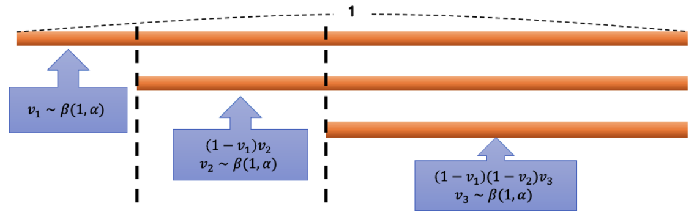
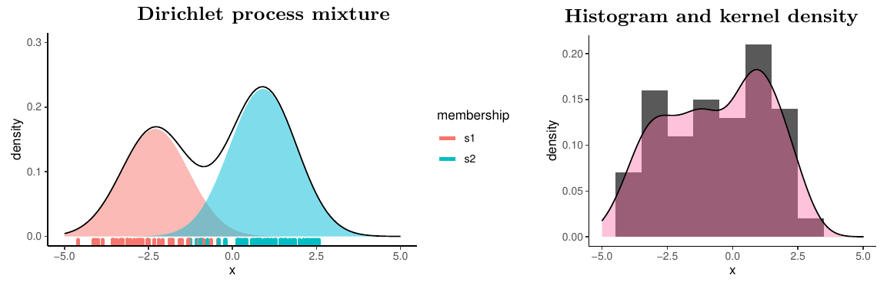

이 연재는 필자의 박사학위 논문 Bayesian Analysis of Nonstationary Extremes (Lee, 2022, University of Edinburgh)의 1.2절(Background)을 우리말로 옮기고 다듬은 것이다.
비모수 베이즈 방법은 제한적인 모수 가정 없이 완전한 확률적 기술을 바탕으로 유연한 모형화를 가능하게 한다. 이 글과 다음 글에서는 디리클레 과정(Dirichlet process) 에 기반한 베이지안 비모수 방법의 요소를 밀도추정 추론을 중심으로 정리한다 (Ghosh and Ramamoorthi, 2003; Müller et al., 2015; Ghosal and Van der Vaart, 2015). 이 글에서는 기본 개념과 기법을 소개하고, 다음 글에서 유계 영역 위의 랜덤 번스타인 다항식(Petrone, 1999a,b)을 소개한다.
통계 문제는 관측값 위에 세운 확률모형으로 기술할 수 있다. 확률표본을 바탕으로 미지의 분포 \(G\) 를 추론하고 밀도를 추정하는 문제를 생각하자.
\[ y_i\mid F\overset{\text{i.i.d.}}{\sim}F,\quad i=1,\ldots,n. \tag{1}\]
관측값이 어떤 분포 \(F\) 에서 독립적으로 뽑혔다고 가정하면, 통계 문제는 분포 \(F\) 에 대한 추론으로 귀결된다. \(\Theta\) 를 모수공간, \(f_{\boldsymbol\theta}\) 를 모수 \(\boldsymbol\theta\in\Theta\) 를 갖는 확률밀도함수라 하자. 그러면 \(f_{\boldsymbol\theta}\) 는 밀도족 \(\mathcal F=\{f_{\boldsymbol\theta}:\boldsymbol\theta\in\Theta\}\) 에 속한다. 모수 \(\boldsymbol\theta\) 가 유한 차원이면 그 통계모형을 모수적(parametric) 모형이라 하고, 그렇지 않으면 비모수적(nonparametric) 모형이라 한다.
일반적으로 유한 차원 모수 가정을 완화하면 더 유연하고 강건한 모형화가 가능하며, 분포족 \(\mathcal F\) 를 잘못 지정해서 생기는 편향을 피할 수 있다. 비모수 모형의 베이지안 추론은 사전분포를 구성하는 데서 시작하며, 무한 차원 모수에 대한 모든 불확실성을 아우르는 완전히 확률적인 접근을 취한다. 아래에서는 무한 차원 모수공간 위의 사전분포, 즉 분포함수들의 모임 위에 정의된 랜덤 확률측도를 소개한다.
디리클레 과정
미지의 분포 \(F\) 에 대한 사전분포, 더 구체적으로 무한 차원 모수공간을 갖는 확률모형 \(\pi\) 를 구성할 때 널리 쓰이는 선택은 디리클레 과정이라는 이산 랜덤 확률측도이다 (Ferguson, 1973).
\(G\) 를 공간 \(\mathcal S\) 위의 확률측도라 하자. 모수 \((\alpha,G_0)\) 를 갖는 디리클레 과정은 \(\mathcal S\) 위의 랜덤 확률측도 \(G\) 로서, \(\mathcal S\) 의 임의의 유한 분할 \(\{B_1,\ldots,B_k\}\) (각 \(B_j\) 는 가측집합)에 대해 벡터 \((G(B_1),\ldots,G(B_k))\) 의 결합분포가 모수 \((\alpha G_0(B_1),\ldots,\alpha G_0(B_k))\) 를 갖는 디리클레 분포가 되는 것으로 정의된다. 그 밀도는 단체 \(\{(G(B_1),\ldots,G(B_k)):G(B_j)\ge0,\ \sum_jG(B_j)=1\}\) 위에서
\[ f(G(B_1),\ldots,G(B_k))=\frac{\Gamma(\alpha)}{\prod_{j=1}^k\Gamma(\alpha G_0(B_j))}\prod_{j=1}^kG(B_j)^{\alpha G_0(B_j)-1} \]
이다. 여기서 \(\alpha>0\) 을 집중 모수(concentration parameter), \(G_0\) 를 기저 측도(base measure) 라 하며, 모수 \((\alpha,G_0)\) 를 갖는 디리클레 과정을 \(\mathrm{DP}(\alpha,G_0)\) 로 표기한다.
막대 꺾기 표현
Sethuraman (1994)은 디리클레 과정의 구성적 정의를 다음과 같이 제안하였다.
\[ G(\cdot)=\sum_{h=1}^\infty w_h\,\delta_{m_h}(\cdot). \]
여기서 \(w_1,w_2,\ldots\) 는 확률 가중치이고 \(\delta_x(\cdot)\) 는 디랙(Dirac) 측도이다. \(m_h\) 는 \(G_0\) 에서 i.i.d.로 뽑고, \(w_h\) 는 남은 길이 \(\{1-\sum_{l<h}w_l\}\) 의 일부로 정한다. 즉, 가중치 \(w_h\) 와 위치 \(m_h\) 는
\[ w_h=v_h\prod_{l<h}(1-v_l),\quad v_h\overset{\text{i.i.d.}}{\sim}\mathrm{Beta}(1,\alpha),\quad m_h\overset{\text{i.i.d.}}{\sim}G_0 \]
로 얻으며, \(v_h\) 와 \(m_h\) 는 서로 독립이다. 그림 1 처럼 가중치 \(w_h\) 는 처음 길이가 1인 막대에서 일정 비율씩 차례로 꺾어 낸 조각에 해당하며, 각 조각이 위치 \(m_h\) 에 할당된다.

디리클레 과정의 성질
디리클레 과정 사전분포는 좋은 통계적 성질을 갖는다. 우선 이산 랜덤 분포를 생성한다. 또한 디리클레 과정은 넓은 약 지지(large weak support) 를 갖는다. 즉, \(G_0\) 와 지지집합이 같은 어떤 분포도 디리클레 과정이 유도하는 확률측도로 약하게(weakly) 잘 근사할 수 있다. 분포 \(Q\) 가 기저 측도 \(G_0\) 아래에서 확률이 0인 사건에 양의 확률을 주지 않는다면, 임의의 유한개 \(B_1,\ldots,B_k\) 와 모든 \(\varepsilon>0\) 에 대해
\[ \pi\{|G(B_j)-Q(B_j)|<\varepsilon,\ j=1,\ldots,k\}>0 \]
이 성립한다 (Ferguson, 1973, 명제 3). 다시 말해 랜덤 확률측도 \(G\) 는 집합 \(B_j\) 위에서 \(Q\) 에 약한 의미로 임의로 가까워질 수 있다. 유한 차원 디리클레 과정 사전분포에서도 마찬가지이며, \(\pi(G(B)>0)=1\) 은 \(G_0(B)>0\) 일 때이고 그때뿐이다.
또한 집합 \(B\) 의 평균과 분산은 디리클레 분포로부터 얻을 수 있다. 분할 \(\{B,B^c\}\) 에서 \(G_0(B^c)=1-G_0(B)\) 이므로, 임의의 집합 \(B\) 에 대해
\[ E[G(B)]=G_0(B),\qquad \mathrm{Var}[G(B)]=\frac{G_0(B)\{1-G_0(B)\}}{1+\alpha} \]
이다. 집중 모수 \(\alpha\) 가 클수록 \(G\) 가 기저 측도 \(G_0\) 주위에 더 집중된다.
사후분포
디리클레 과정 사전분포는 i.i.d. 관측 모형에 대해 켤레이다. 방정식 1 의 표본 모형에서 \(G\) 에 디리클레 과정 사전분포를 주면, \(G\) 의 사후분포도 디리클레 과정이다. 사후 디리클레 과정의 기저 측도는 사전 기저 측도에 각 관측점 \(y_i\) 의 점질량을 더한 것으로, 사전 기저 측도 \(G_0\) 와 경험분포 \(\hat f(\cdot)=\frac1n\sum_{i=1}^n\delta_{y_i}(\cdot)\) 의 가중평균이 된다. 사후 총질량은 \(\alpha+n\) 으로 늘어난다.
정리 1 (i.i.d. 관측값에 대한 디리클레 과정 사전분포의 사후분포) \(y_1,\ldots,y_n\) 이 분포 \(G\) 의 확률표본, 즉 \(y_1,\ldots,y_n\mid G\overset{\text{i.i.d.}}{\sim}G\) 이고 \(G\sim\mathrm{DP}(\alpha G_0)\) 라 하자. 그러면 \(G\) 의 사후분포는 다음 디리클레 과정이다.
\[ G\mid y_1,\ldots,y_n\sim\mathrm{DP}\left(\alpha G_0+\sum_{i=1}^n\delta_{y_i}\right). \]
증명은 Ferguson (1973, 정리 1)을 참고하라. 여기서 \(\mathrm{DP}(\alpha G_0)\) 는 총질량 \(\alpha\) 와 정규화된 기저 측도 \(G_0\) 를 한데 묶은 측도 \(\alpha G_0\) 로 디리클레 과정을 표기한 것이다.
폴리아 항아리 표현
관측값 \(y_1,\ldots,y_n\) 의 주변분포는 \(G\) 에 대해 적분하여
\[ P(y_1,\ldots,y_n)=\int\prod_{i=1}^n f_G(y_i)\,\mathrm dG \]
로 얻는다. 그러나 주변분포에서 표본을 뽑을 때는 다른 방법이 유용하다. 폴리아 항아리(Pólya urn) 표현은 주변분포를 차례로 이어지는 조건부 확률의 곱으로 나타낸다.
\[ \begin{aligned} P(y_1,\ldots,y_n)&=P(y_1)\prod_{i=2}^nP(y_i\mid y_1,\ldots,y_{i-1}),\\ P(y_i\mid y_1,\ldots,y_{i-1})&=\frac{1}{\alpha+i-1}\sum_{h=1}^{i-1}\delta_{y_h}(y_i)+\frac{\alpha}{\alpha+i-1}G_0(y_i),\quad i=2,3,\ldots \end{aligned} \]
여기서 \(y_1\sim G_0\) 이다. \(y_{n+1}\) 의 사후 예측분포는 다음과 같다.
\[ P(y_{n+1}\mid y_1,\ldots,y_n)=\frac{1}{\alpha+n}\sum_{h=1}^n\delta_{y_h}(y_{n+1})+\frac{\alpha}{\alpha+n}G_0(y_{n+1}). \]
즉, 새 관측값은 확률 \(n/(\alpha+n)\) 으로 이미 관측된 값 가운데 하나와 같아지고, 확률 \(\alpha/(\alpha+n)\) 으로 기저 측도 \(G_0\) 에서 새로 뽑힌다.
디리클레 과정 혼합
디리클레 과정 사전분포는 이산분포를 생성하므로, 연속분포의 밀도추정에는 그대로 쓰기에 적합하지 않다. 그러나 디리클레 과정을 단순한 모수적 밀도(커널) 위의 혼합에서 혼합 측도(mixing measure) 로 쓰면 밀도추정에도 적용할 수 있다.
\(\Theta\) 를 유한 차원 모수공간, \(f_{\boldsymbol\theta}\) 를 모든 \(\boldsymbol\theta\in\Theta\) 에 대해 연속인 밀도함수라 하자. 공간 \(\Theta\) 위의 분포 \(G\) 가 주어지면, 디리클레 과정 혼합(Dirichlet process mixture, DPM) 은 밀도 \(f_{\boldsymbol\theta}\) 들의 다음 혼합이다.
\[ f_G(y)=\int f_{\boldsymbol\theta}(y)\,\mathrm dG(\boldsymbol\theta). \tag{2}\]
디리클레 과정 혼합 모형은 풍부한 연속 밀도함수족을 만든다. 모수 \(\boldsymbol\theta=(\mu,\sigma)\) 를 갖는 어떤 고정된 밀도 \(g\) 에 대해, \(\sigma\to0\) 을 허용하면 조정된 밀도 \(f_{\boldsymbol\theta}(y)=\sigma^{-1}g((y-\mu)/\sigma)\) 들의 혼합으로 임의의 밀도를 \(L_1\) 의미에서 근사할 수 있기 때문이다 (Lo, 1984). 방정식 2 의 디리클레 과정 혼합은 다음 계층 형태로도 나타낼 수 있다.
\[ y_i\mid\theta_i\overset{\text{ind}}{\sim}f_{\theta_i},\quad \theta_i\mid G\overset{\text{i.i.d.}}{\sim}G,\quad G\sim\mathrm{DP}(\alpha,G_0). \tag{3}\]
계층모형을 \(\theta_i\) 에 대해 적분하여 주변화하면 방정식 3 는 방정식 2 의 혼합모형과 같다. 이 표현에서 \(G\) 의 사후분포 \(P(G\mid\mathbf y)\) 는 잠재변수 \(\theta_i\) 에 대해 혼합한 디리클레 과정들의 혼합으로 볼 수 있다. 따라서 디리클레 과정 혼합의 사후분포를 얻는 데에도 디리클레 과정의 혼합에 대한 표본추출 기법을 쓸 수 있으며, 그 결과로 얻는 분포는 같다.
정리 2 (i.i.d. 관측값에 대한 디리클레 과정 혼합의 사후분포) \(\mathbf y=(y_1,\ldots,y_n)\), \(\boldsymbol\theta=(\theta_1,\ldots,\theta_n)\) 이라 하자. \(i=1,\ldots,n\) 에 대해 \(y_i\mid\theta_i\overset{\text{ind}}{\sim}f_{\theta_i}\), \(\theta_i\overset{\text{i.i.d.}}{\sim}G\) 이고 \(G\sim\mathrm{DP}(\alpha,G_0)\) 이면, \(\mathbf y\) 가 주어졌을 때 \(G\) 의 사후분포는
\[ G\mid\mathbf y\sim\int\mathrm{DP}\left(\alpha G_0+\sum_{i=1}^n\delta_{\theta_i}\right)\mathrm dp(\boldsymbol\theta\mid\mathbf y) \]
이다.
증명은 Antoniak (1974, 정리 3)을 참고하라.
랜덤 분할과 군집화
디리클레 과정의 이산성 때문에 잠재변수 \(\theta_i\) 들 사이에 같은 값(tie)이 나올 확률이 양수이다. \(j=1,\ldots,k\) (\(k\le n\))에 대해 \(\theta_j^*\) 를 \(\theta_i\) 의 서로 다른 값들, \(S_j=\{i:\theta_i=\theta_j^*\}\) 를 \(j\) 번째 군집에 속한 첨자 \(i\) 들의 집합이라 하자. \(n_j=|S_j|\) 는 \(\theta_j^*\) 와 같은 값을 갖는 \(\theta_i\) 의 개수이고, \(\rho_n=\{S_1,\ldots,S_k\}\) 는 실험 단위 집합 \(\{1,\ldots,n\}\) 의 분할이다.
디리클레 과정 혼합 모형은 실험 단위의 랜덤 분할 \(\rho_n\) 에 대한 모형을 함께 만든다. \(\rho_n\) 의 확률모형은 구성 과정에서 우연히 생긴 부산물처럼 보이지만, 중국 식당 과정(Chinese restaurant process) 이라 불리는 이 분할에 초점을 맞춘 응용이 많다. 랜덤 분할의 사후분포 \(P(\rho_n\mid\mathbf y)\) 는 관측값 \(\mathbf y\) 의 군집화에 대한 추론을 보여 준다.
군집 소속 지시변수 \(s\) 를 \(i\in S_j\) 이면 \(s_i=j\) 로 정의하자. 지시변수는 등장 순서대로 붙인다. 즉, \(s_1=1\), \(\theta_{i_2}\ne\theta_1\) 인 가장 작은 \(i_2>1\) 에 대해 \(s_{i_2}=2\), \(\theta_{i_3}\notin\{\theta_1,\theta_2\}\) 인 가장 작은 \(i_3>i_2\) 에 대해 \(s_{i_3}=3\), 이런 식이다. 그러면 \(s_1,\ldots,s_{i-1}\) 이 주어졌을 때 \(s_i\) 의 조건부 확률은
\[ P(s_i=j\mid s_1,\ldots,s_{i-1})= \begin{cases} \dfrac{n_{i-1,j}}{\alpha+i-1}, & j=1,\ldots,k_{i-1},\\[2ex] \dfrac{\alpha}{\alpha+i-1}, & j=k_{i-1}+1 \end{cases} \]
이다. 여기서 \(k_{i-1}\) 은 \(\{\theta_1,\ldots,\theta_{i-1}\}\) 가운데 서로 다른 값의 개수이고, \(n_{i-1,j}\) 는 그중 \(j\) 번째 값을 갖는 것의 개수이다. \(\theta_i\) 들의 교환가능성(exchangeability)에 의해, 조건부 확률 \(P(s_i\mid s_{-i})\) 도 \(i=n\) 인 경우와 같은 형태를 갖는다.
\[ P(s_i\mid s_{-i})=P(\theta_i\mid\theta_{-i})\propto\sum_{j=1}^{k^-}n_j^-\,\delta_{\theta_j^{*-}}(\theta_i)+\alpha\,G_0(\theta_i),\quad i=1,\ldots,n. \]
여기서 \(\theta_{-i}\) 는 \(\boldsymbol\theta\) 에서 \(i\) 번째 원소 \(\theta_i\) 를 뺀 것이고, \(k^-\) 는 \(\theta_{-i}\) 의 서로 다른 값의 개수, \(\theta_j^{*-}\) 는 그 \(j\) 번째 값, \(n_j^-\) 는 \(j\) 번째 값을 갖는 원소의 개수이다. 사후분포 \(P(G\mid\mathbf y)\) 는 각 관측값의 군집 소속을 표본추출하여 모의할 수 있다.
보기 1 (가우스 커널을 쓰는 디리클레 과정 혼합) 가우스 커널을 쓰는 디리클레 과정 혼합은 다음과 같다.
\[ y_i\mid\theta_i\overset{\text{ind}}{\sim}N(\theta_i,\sigma^2),\quad \theta_i\mid G\overset{\text{i.i.d.}}{\sim}G,\quad G\sim\mathrm{DP}(\alpha,G_0),\quad G_0:=N(\mu_0,\sigma_0^2). \]
관측값 \(y_i\) 는 평균 \(\theta_i\), 분산 \(\sigma^2\) 인 가우스 밀도 가운데 하나에서 뽑힌 것으로 볼 수 있다. 그림 2 은 \(\theta_1=-2.3\), \(\theta_2=0.91\), \(\sigma^2=1\) 일 때 각 관측값의 군집화를 보여 준다. 모형은 각 관측값에 군집 소속 \(s_i\) 를 부여하고, 그 군집화가 혼합모형의 가중치를 결정한다.

주요 참고문헌
- Antoniak, C. E. (1974). Mixtures of Dirichlet processes with applications to Bayesian nonparametric problems. The Annals of Statistics, 2, 1152–1174.
- Ferguson, T. S. (1973). A Bayesian analysis of some nonparametric problems. The Annals of Statistics, 1, 209–230.
- Ghosal, S. and Van der Vaart, A. W. (2015). Fundamentals of Nonparametric Bayesian Inference. Cambridge University Press.
- Ghosh, J. K. and Ramamoorthi, R. V. (2003). Bayesian Nonparametrics. Springer.
- Lo, A. Y. (1984). On a class of Bayesian nonparametric estimates: I. Density estimates. The Annals of Statistics, 12, 351–357.
- Müller, P., Quintana, F. A., Jara, A. and Hanson, T. (2015). Bayesian Nonparametric Data Analysis. Springer.
- Sethuraman, J. (1994). A constructive definition of Dirichlet priors. Statistica Sinica, 4, 639–650.